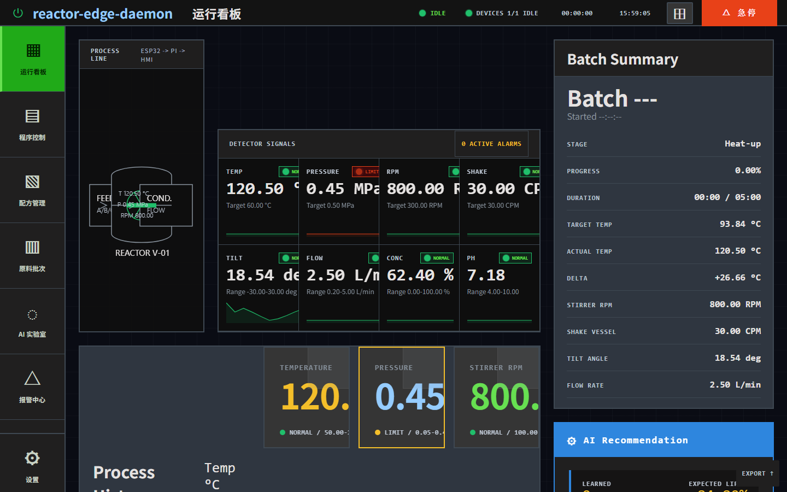
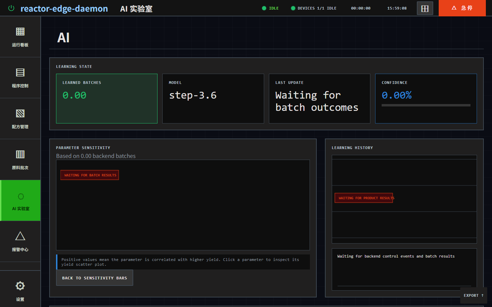
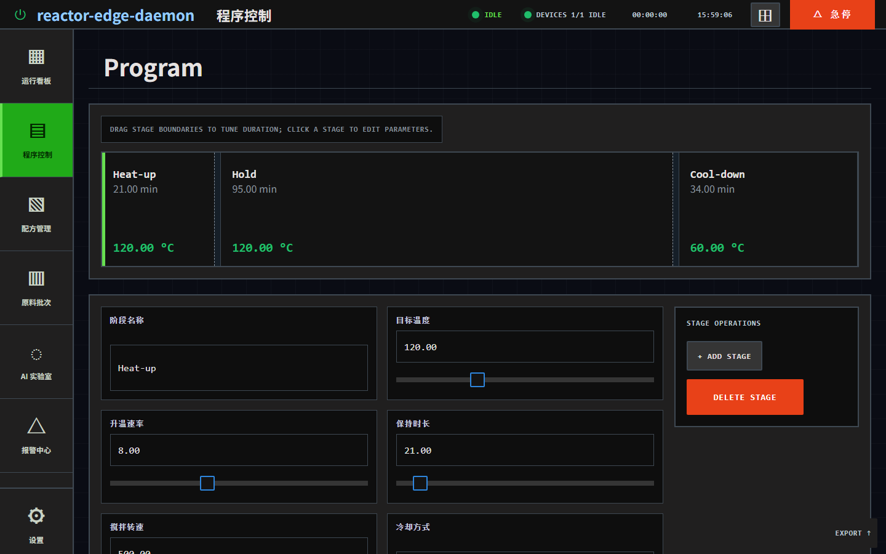
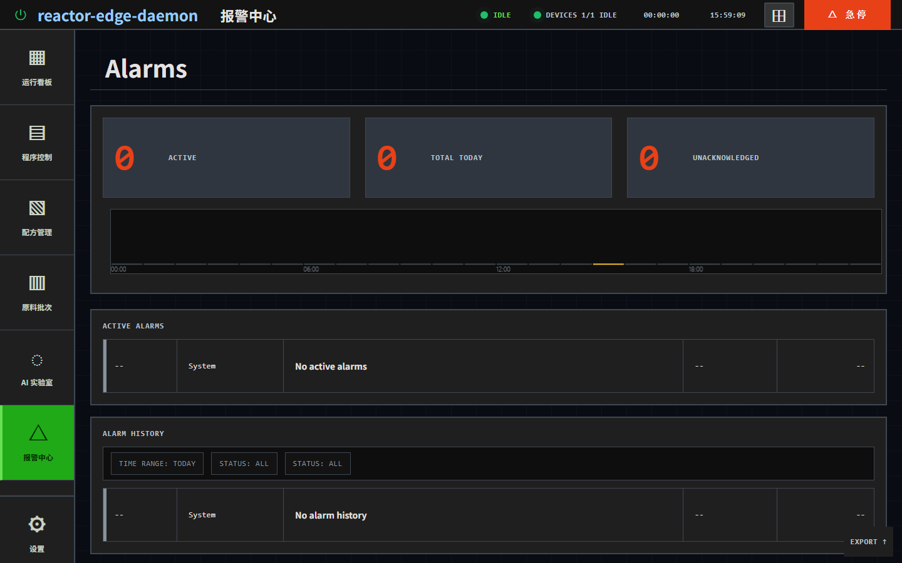
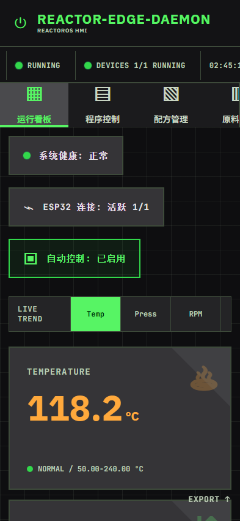

传统的反应釜控制层软件与硬件严重绑定，面临安全失控、工艺黑箱与高昂门槛等诸多阻碍。
传统 PID 控制面对非线性放热时极易超冲过温，轻则整批物料报废，重则导致设备损坏、发生爆炸。
工艺开发完全依赖人工经验摸索，反应批次之间的工艺参数无法自我比对、科学迭代。
大型分布式控制系统动辄十几万元，布线极其复杂，无法适配科研实验室或小步快跑的中试线。
实验数据纸质化或分散在上位机易改篡的 Excel 表中，缺乏秒级防篡改的操作审计日志。
本地搭载基于 safety.toml 的控制锁。执行步长渐进过滤，联动异常状态急停，彻底规避热惯性过冲与 AI 幻觉异常参数。
云端 StepFun 大模型对 SQLite 存储的多元批次数据自动推理提炼，生成高产率温度与转速，实现自进化工艺推荐。
针对树莓派等超低功耗板卡精细优化，单二进制无 GC 开销，运行内存小且自带静态上位机 HMI，一键部署离线稳定运行。
嵌入式 SQLite 自动记录操作员每一次修改温度、转速及急停的指令，生成符合 FDA 等级要求的本地审计事件队列。
软硬件深度解耦架构，从算法、安全、追溯到部署，为现代精细化工中试量身定做。
内置本地遗传/退火算法与云端 StepFun AI (step-3.6) 大模型决策机制。基于历史批次自动推荐并推理出能够达到最佳收率的物料温度与搅拌曲线，伴随实验数据增加进行自我进化。
AI 指令与人工更改在下发底端硬件前，必须经过物理层面的安全围栏过滤器。强制检查单次步长变化上限（如温度调整温差不超 5℃），依靠渐进逼近克服化学惯性，发生异常或超时秒级联动断电急停。
使用嵌入式 SQLite3 数据库进行数据高频秒级落盘。严格持久化记录传感器采样数据、操作员控制行为、报警状态变更以及 AI 决策全过程，为实验和监管合规提供无法被篡改的完整审计数据链。
底层采用读写分离桥接模式。既支持通过开源配套 C++ ESP32 固件直接进行 RS485 串口采集交互，也支持通过原子的 state.json 与 control.json 进行轻量文件桥接，可无痛适配所有第三方硬件和 PLC 系统。
核心守护进程完全采用高性能 Rust 语言构建，无垃圾回收 (GC) 开销。整个进程启动耗时极短，内存占用低于 50MB，在网络全封闭的深山工厂、洁净间开发板上同样能够 100% 独立且完美地运行。
系统自带单文件静态 Web 上位机控制台。适配各类高分辨率中控屏与移动手持端，实时绘制传感器曲线，支持工艺编辑器、报警归档、批次结束及结果录入功能，为一线工程师带来顶级交互体验。
打通底层物理执行器、边缘算力中枢、安全拦截沙盒、本地审计库与大模型大脑的数据管线。
传感器与执行器
ESP32 / PLC / ModbusRust 单进程中枢
Tokio / Axum Server物理安全限幅
safety.tomlStepFun 智能决策
step-3.6 / ai_memorySQLite 离线审计流
SQLite3 / Logs静态 Web UI / 移动端
Kiosk / PC Web / Qt鼠标悬停在上方架构节点上，可以查看其在星宿反应釜体系中的核心技术原理和工作细节。
看看实际部署在鲁班猫开发板上的 ReactorOS 系统操作界面与数据管理看板。





针对低功耗边缘端深度调优，各项关键技术参数及运行稳定性实测指标一览。
| 模块名称 | 指标项 | 技术规格与实测表现 | 规格特征 |
|---|---|---|---|
| 基础运行底座 | 推荐硬件平台 | 树莓派 4B / 5，鲁班猫 2 / 3 等基于 Cortex-A55 ARM64 处理器板卡 | 超低门槛 |
| 核心守护程序 | 软件核心架构 | 基于 Rust 1.75+ 编译，Tokio 高并发异步运行时，Axum 提供轻量 Web 服务 | 极低功耗 |
| 算力资源损耗 | 内存与 CPU 负载 | 守护进程内存占用 < 30MB，单核 CPU 平均占用率低于 3% | 无 GC 开销 |
| 高频数据采集 | 硬件采样频率 | 默认支持 1Hz ~ 10Hz 秒级实时采样，覆盖温度、压力、转速等 7 大核心指标 | 秒级采样 |
| 绝对安全响应 | 链路超时与急停延迟 | 传感器掉线/数据超时检测默认为 6,000ms；急停指令下发硬件响应时间 < 100ms | 硬性拦截 |
| 大模型 AI 决策 | 智能推荐机制 | 本地遗传/退火算法 + 云端 StepFun AI (step-3.6) 联合决策；拦截禁区参数 | 沙盒隔离 |
| 系统数据审计 | 本地存储介质 | 本地 SQLite3 嵌入式高可靠数据库，支持 control_events 等全路径审计流 |
100%离线审计 |
无论是科研探索、中试生产还是存量改造，星宿体系均能提供完美的技术闭环。
通过“AI 工艺大脑”推荐功能与数据库历史批次对比，研究人员可大幅缩短寻觅催化反应最佳温控、搅拌区间的实验周期，将经验配方数字化沉淀为高产率资产。
在从小试到中试放大的高风险阶段，依靠“安全卫士”物理控制锁提供的“步长限幅”与“多重报警联动急停”，保护昂贵的原料免于温度失稳“飞温”灾难。
仅需给配备 PLC 或简易仪表的原有存量设备挂载一套低成本的 ESP32 串口桥接器与树莓派硬件，即可零改动旧线路直接拥有顶级 Web 交互与云端大模型优化大脑。